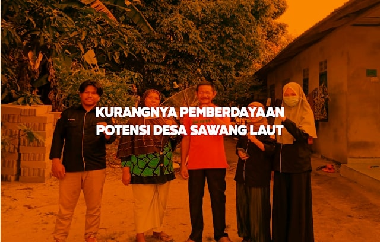

Kurangnya Pemberdayaan Potensi Desa Sawang Laut
Himpunan Mahasiswa Kundur (HIMK) Tanjungpinang-Bintan melakukan sebuah kegiatan Latihan Kepemimpinan tingkat II. Kegiatan ini dilakukan selama tiga hari,dari tanggal 10 s/d 12 agustus 2020 dan dilakukan di setiap kecamatan yang ada di pulau kundur. Tujuan dari LK II ini ialah untuk melakukan penelitian dan juga pengabdian ke masyarakat untuk melihat dan mencari permasalahan ataupun keluh kesa yang terjadi di masyarakat dan juga lembaga pemerintah yang ada di pulau kundur.yang kemudian mahasiswa di harapkan agar dapat mencari dan mendapatkan solusi atas permasalahan yang di temukan,sehingga hasil dari kegiatan latihan kepemimpinan tingkat II dapat menjadi sebuah obat untuk permasalahan yang ada di masyarakat dan juga lembaga pemerintahan. Sebelum saya dan rekan-rekan yang lain turun ke masyarakat untuk melakukan kegiatan latihan kepemimpinan tingkat II kami di kumpulkan terlebih dahulu menjadi satu tempat untuk mendengar arahan dan juga pembagian wilayah di mana tempat LK II akan di laksanakan, yang di sampaikan oleh Muslim Hamdi selaku Ketua Umum Himpunan Mahasiswa Kundur (HIMK) Tanjungpinang-Bintan 2019-2020. Setelah itu saya dan rekan-rekan menuju ke wilayah yang telah di tentukan untuk melakukan kegiatan Latihan Kepemimpinan Tingkat II tepatnya di Kobel Laut, Desa Sawang Laut. Kobel Laut masuk ke dalam Desa Sawang Saut yang jika di bandingkan dengan desa-desa lainnya yang berada di Pulau Kundur, Desa Sawang Laut merupakan salah satu desa yang cukup relative membangun di dalam sektor insfrastruktur desa. Karena wilayah dan letak Desa Sawang Laut cukup strategis dan salah satu jalur masuk dan keluarnya perekonomian di Pulau Kundur. Potensi yang dimiliki oleh Desa Sawang Laut yaitu di sektor perikanan dan juga pertanian. Karena sebagian wilayah desa dekat dengan pantai dan masyarakat berkumin di bibir pantai laut sawang, masyarakat yang tinggal jauh di laut atau di daerah darat mereka berprofesi sebagai petani. Masyarakat yang berprofesi sebagai nelayan dan juga petani membetuk sebuah organisasi atau kelompok tani dan nelayan untuk merangkul masyarakat lain yang berprofesi samai. Kelompok itu juga berfungsi untuk mencari atau mendapatkan dana dan juga bantuan seperti perahu, jaring, bibit tanaman dan juga pupuk. Di setiap kelompok pertanian dan juga nelayan mereka membuat sebuah sistem simpan pinjam untuk para anggota yang kekurangan modal. Dana simpan pinjam yang ada di setiap kelompok itu mereka dapatkan dari bantuan dana dari dinas dan juga PT. TIMAH yang berada di daerah Kundur Barat. Karena untuk setiap bantuan dana dan juga peralatan nelayan dan juga petani itu tidak setiap bulan atau setiap tahun meraka dapatkan, jadi para kelompok tersebut membuat simpan pinjam agar para anggota tidak bingung ketika tidak bisa melaut dan hasil pertanian tidak maksimal. Kelompok nelayan dan juga tani itu tidak hanya untuk mencari dana dan juga bantuan-bantuan lainya, tetapi juga untuk mengikuti pelatihan-pelatihan yang di selenggarakan oleh Dinas terkait. Biasanya di setiap kelompok di wakilkan satu atau 2 anggota untuk mengikuti pelatihan yang di selenggarkan oleh dinas Pertanian dan juga Dinas Perikanan. Tokoh masyarakat dan salah satu anggota kelompok juga menyampaikan karena tidak adanya kelanjutan atau pemberdayaan dari pelatihan tersebut dari dinas-dinas yang menyelenggarakan, akibatnya pengetahuan yang di dapat tidak dapat berkelanjutan karena tidak adanya bimbingan yang dilakukan oleh pihak dinas-dinas terhadap para anggota kelompok yang mewakili pelatihan tersebut.para anggota kelompok lainnya juga mengeluhkan bahwasanya mereka juga masih kurang mengerti jika hanya mengikuti pelatihan yang di lakukan 2 sampai 10 hari tanpa adanya pembimbingan langsung untuk melakukan pratek di lapangan. Jadi dapat disimpulkan bahwa kurangnya pemberdayaan yang di lakukan oleh Lembaga Pemerintahan untuk meningkatkan potensi yang ada di Desa Sawang Laut, agar potensi-potensi tersebut mampu menjadi suatu usaha yang mampu membuka lowongan pekerjaan dan juga meningkatkan ekonomi masyarakat untuk itu perlunya dilakukan pemberdayaan dan juga pemahaman kepada masyarakat mengenai potensi yang ada di Desa Sawang Laut yang di lakukan oleh Lembaga Pemerintah Daerah.
Penulis: Yogi